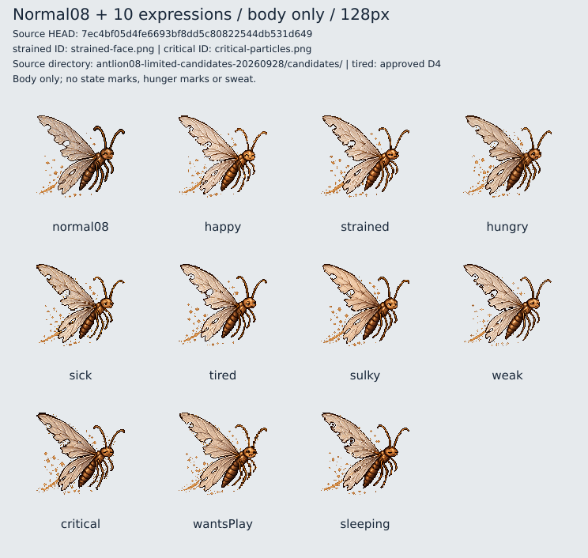
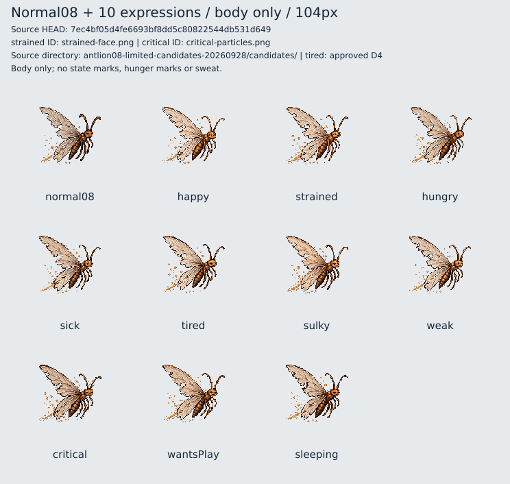
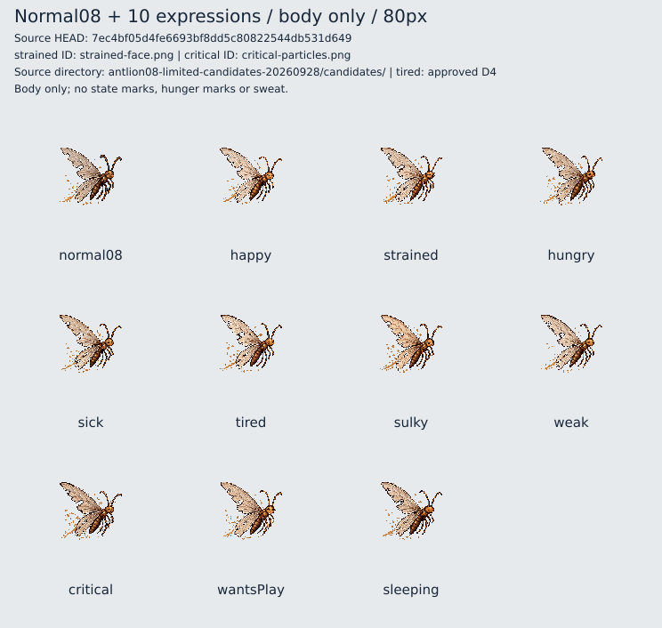
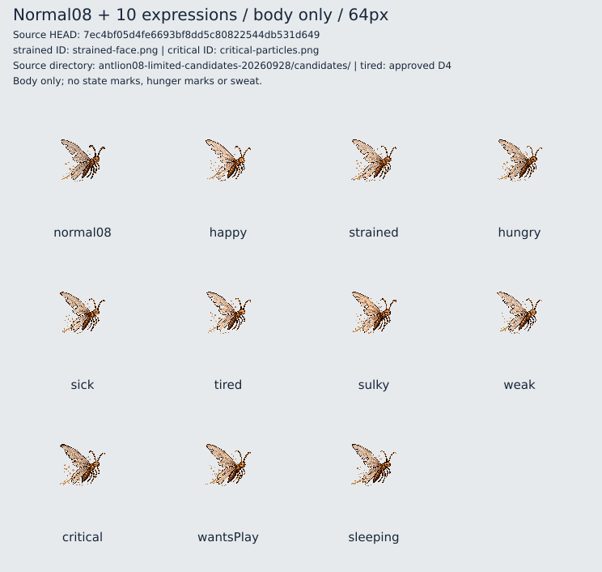
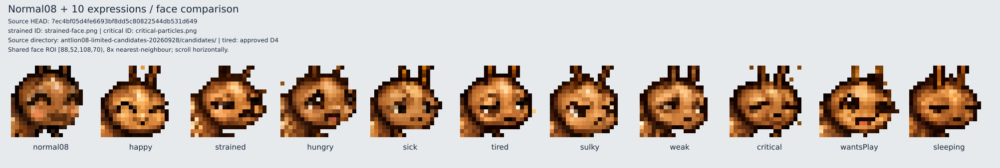
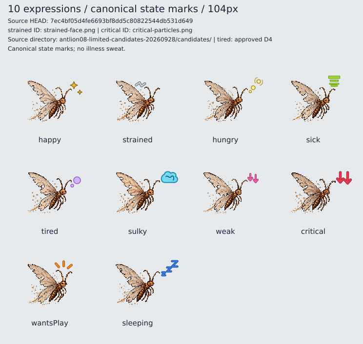
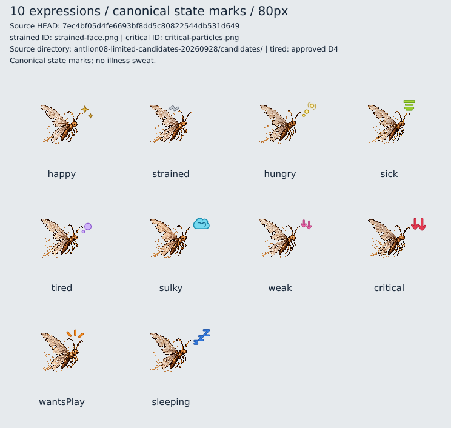
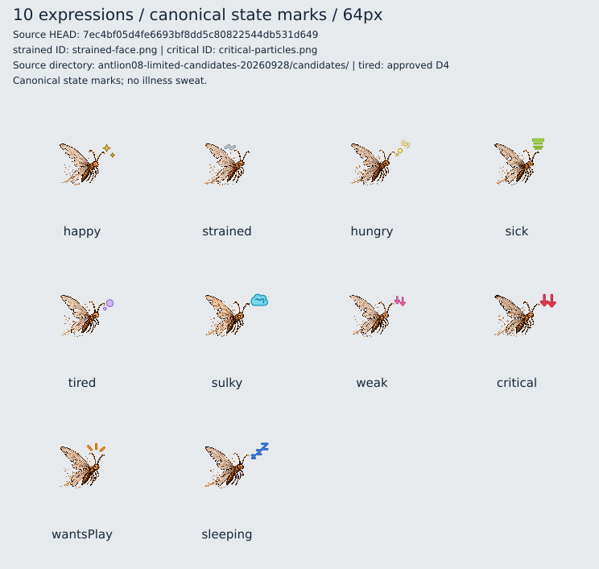

本体128pxから確認し、他サイズ、顔拡大、正式マーク付きへ順に見比べてください。画像下の表記は表情名のみです。64px単独の完全識別を合格条件にはしません。
画像の自然さ・同じ個体と画風・相互の違い・顔や身体の変化・粒子と表情のバランスを直接判断する資料です。今回、機械的な最終判定は行いません。
Source HEAD: 7ec4bf05d4fe6693bf8dd5c80822544db531d649
strained: strained-face.png
critical: critical-particles.png
限定候補の保存場所と全11画像のSHA-256はsources.jsonに記載。D4 tiredは正式採用済み画像です。
HTMLは画像を自動縮小せず横スクロールします。ブラウザー倍率100%で各サイズを比較してください。単独PNGは端末が画面幅へ縮小する場合があります。








画像変更・本番置換・追加承認なし。人間目視確認待ち。